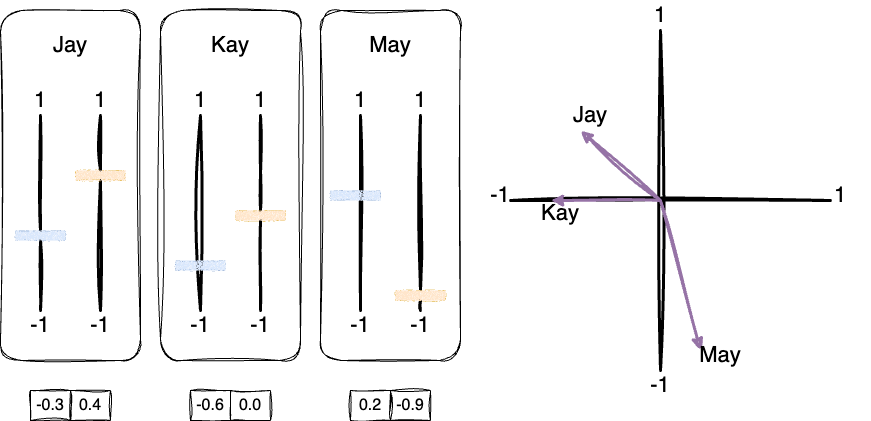
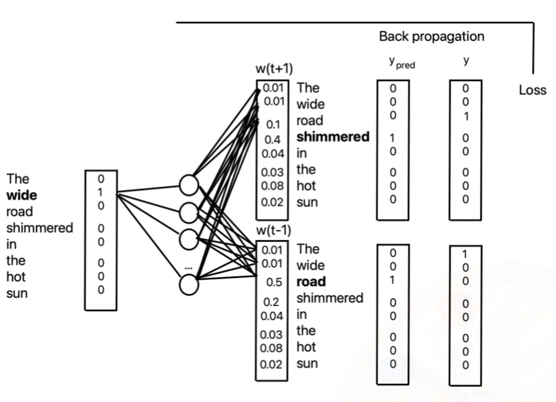

![]()
import gensim.downloader as api
# Download a pre-trained word embedding model (if not already downloaded)
model = api.load("glove-wiki-gigaword-50")Word Embeddings and Representation in Text
Tip
What is the name?
Warning
What is the name?
Note
What is the name?
Important
What is the name?
Embedding People: Analogies in Personality Dimensions
The HEXACO model of personality structure is a six-dimensional model of human personality that was created by Ashton and Lee and explained in their book, The H Factor of Personality,[1] based on findings from a series of lexical studies involving several European and Asian languages. The six factors, or dimensions, include honesty-humility (H), emotionality (E), extraversion (X), agreeableness (A), conscientiousness (C), and openness to experience (O). Each factor is composed of traits with characteristics indicating high and low levels of the factor. If you’ve ever taken a personality test, you might have encountered these dimensions.
We have three hypothetical colleagues, Jay, Kay, and May. Each has taken a personality test and received scores for two personality dimensions which we’ll call “Dimension 1” and “Dimension 2.” The scores are as shown Figure 1 depicted graphically in the top left. We can take these scores and represent them as vectors in a two-dimensional space, where each dimension corresponds to one of the personality dimensions as shown in the bottom of Figure 1. Using these vectors, we can visualize the relationships between Jay, Kay, and May in this two-dimensional space as shown on the right plot of Figure 1.

The idea of “embedding people” allows us to take abstract concepts like personality traits and represent them in a numerical space. This concept is extended to words in natural language processing, where we represent words as vectors in a high-dimensional space. These word embeddings capture the meaning and relationships between words, allowing us to perform various tasks like sentiment analysis, machine translation, and named entity recognition. Just like with Jay, Kay, and May, words that are similar in meaning are close together in this space.
In the case of personality traits the dimensions are derived from a psychological model, but in the case of word embeddings, the dimensions are learned from large text corpora using models like Word2Vec, GloVe, or fastText. These models learn to represent words in a way that captures their semantic and syntactic relationships based on the context they appear in.
Word Embeddings: Capturing Semantic Relationships
Text is one of the most abundant forms of data in healthcare, with sources ranging from electronic health records (EHRs) to published research articles, clinical notes, and even patient-reported outcomes. However, computers don’t understand words as humans do—they require numerical representations of text to analyze, model, and make predictions. The challenge is: how do we represent the meaning of words in a way that captures their context and relationships in a way that machines can understand?
This is where word embeddings come into play. Word embeddings provide a way to represent words as vectors (numerical arrays), capturing semantic relationships and making it possible to apply machine learning models to text. By converting text into embeddings, we open the door to a range of applications, from clinical text mining to predicting patient outcomes based on unstructured medical notes.
This chapter introduces word embeddings and explains how they allow us to map words into a vectors that encode semantic and syntactic meaning. We’ll cover why this is an improvement over older methods, how these embeddings are learned, and how they are used in medical applications.
Limitations of Traditional Text Representations
Before diving into embeddings, let’s briefly review older techniques for representing text. The simplest representations were based on bag-of-words (BoW) models and term frequency-inverse document frequency (TF-IDF) scores.
Bag-of-Words and TF-IDF
Bag-of-words ignores the order of words and represents text based on word occurrences. For example, a clinical note with the text: “Patient experiences chest pain” would be represented simply as
["patient", "experiences", "chest", "pain"]. The model doesn’t understand that “chest” and “pain” are related, or that their combination is meaningful.TF-IDF refines this by weighing how frequently words appear in a document relative to how common they are across all documents. This addresses the fact that some words are very frequent and not informative, like “the” or “patient.”
Limitations
- Lack of Context: These methods do not capture word order or semantics. For example, in BoW, the words “chest pain” and “pain in the chest” would be represented the same.
- High Dimensionality: BoW and TF-IDF result in large sparse matrices, making it difficult to work with longer documents.
- No Concept of Similarity: In these models, words like “doctor” and “physician” are treated as completely independent, despite their similar meanings.
This leads us to modern word embeddings, which solve many of these issues.
What Are Word Embeddings?
Word embeddings are dense, low-dimensional vector representations of words, where words with similar meanings have similar vector representations. The key idea is that these embeddings capture both the syntactic and semantic properties of words. The most popular models for learning embeddings include Word2Vec [@mikolovEfficientEstimationWord2013], GloVe [@penningtonGloVeGlobalVectors2014], and fastText [@bojanowskiEnrichingWordVectors2017].
Figure 2 effectively demonstrates how word embeddings capture the meaning and relationships between words in a numerical space, and how this can be visualized after reducing the dimensionality. Let’s break down each part of the figure to build intuition.
In the left section of the figure, you see word embeddings for seven different words: “dog,” “puppy,” “cat,” “houses,” “man,” “woman,” “king,” and “queen.” Each word is represented as a vector in a seven-dimensional space (d1 to d7), where each number in the row corresponds to a particular dimension in this space.
For example: - “dog” is represented as the vector [0.6, 0.9, 0.1, 0.4, -0.7, -0.3, -0.2] - “cat” is represented as [0.7, -0.1, 0.4, 0.3, -0.4, -0.1, -0.3]
These vectors encode the meaning of the words, capturing their relationships to other words in the vocabulary based on the corpus they were trained on.
Word embeddings are numerical representations of words
Each word is represented as a dense vector of real numbers. The dimensions (d1 to d7) don’t have a simple interpretable meaning like “animal” or “emotion,” but the relationships between the vectors capture such nuances. 1. Similarity and Relationship: Words that are semantically similar or related (like “dog” and “puppy”) tend to have similar vectors, meaning that in seven-dimensional space, they are near each other. We’ll see how this manifests in the visualization on the right.
The right side of Figure 2 shows what happens when we reduce the dimensionality of these word embeddings from 7D to 2D (for visualization). Dimensionality reduction techniques like Principal Component Analysis (PCA) or t-SNE are often used to reduce the complexity of the data while retaining its most important features. Here, reducing from 7 dimensions to 2 allows us to visualize the relationships between the words in 2D space. Note that the actual embeddings are learned in much higher dimensions (e.g., 100 to 300) and that the 2D projection is for visualization purposes only.
In the top-right plot of Figure 2, we see the 2D embeddings for “dog,” “puppy,” “cat,” and “houses.”
“Dog” and “puppy” are close together in the embedding space, reflecting their semantic similarity. Both refer to canines, with “puppy” being a younger dog. This proximity in vector space is a hallmark of how embeddings capture semantic similarity. - “Cat” is a bit further away, as it represents a different animal, but it is still in proximity, highlighting some shared characteristics between cats and dogs (both are pets/animals). - “Houses” is far from all the animal-related words. This makes sense because “houses” is a completely different concept (object vs. animal). The fact that it’s distant in the embedding space highlights that the embeddings successfully differentiate unrelated terms.
Figure 2 is a simplified example, but it captures the essence of how word embeddings work and how they can be visualized in lower dimensions to reveal relationships between words.
Real world example: King-Queen Analogy
In Figure 3, we see a classic example of how word embeddings capture relationships between words. The figure shows the embeddings a number of words, including “king,” “queen,” “man,” and “woman” in 2D space. The axes have been adjusted to highlight the relationships between these words so that the y-axis represents the woman–queen axis representing a sense of royalty. The x-axis, aligned with the he–she axis represents a gender dimension.

An amazing property of word embeddings is that they can capture analogies like “King is to Queen” as “Man is to woman.” This is known as the king-queen analogy and is a classic example of how embeddings can encode relationships between words. To use embeddings to solve this analogy, we can perform vector arithmetic. In this case, the vector operation we could use is given in Equation 1.
\[\text{vector("king")} - \text{vector("man")} + \text{vector("woman")} \approx \text{vector("queen")} \tag{1}\]
Here are a few ways of thinking about Equation 1.
This figure illustrates word embeddings in a 2D space, where the x-axis represents the spectrum from “he” to “she” and the y-axis represents the spectrum from “woman” to “queen”. The famous analogy “king - man + woman = queen” can be intuitively explained using this geometric representation:
Vector representation:
In this space, each word is represented as a 2D vector. The position of each word encodes semantic information about gender and royalty/status.
“king - man”: This subtraction shifts the vector from “king” in the direction opposite to “man”. Geometrically, it moves the point left and slightly down, removing the “maleness” from “king”.
“+ woman”: Adding “woman” shifts the resulting vector right and down, adding “femaleness”.
Result ≈ queen: The final position after these operations ends up very close to “queen”.
Geometric interpretation:
- Subtraction (king - man): Imagine drawing a vector from “man” to “king”. This represents the concept of “royalty” independent of gender.
- Addition (+ woman): Now apply this “royalty” vector starting from “woman”. It brings you to a point very close to “queen”.
Semantic relationships:
- “king” is to “man” as “queen” is to “woman”
- The difference between “king” and “man” (royalty) is similar to the difference between “queen” and “woman”
- “king” and “queen” are at similar heights (y-values), representing similar levels of royalty/status.
- “man” and “woman” are at similar heights, but lower than king/queen.
- The gender axis (x-axis) separates male and female terms consistently while the royalty axis (y-axis) separates royal titles from less “regal” terms.
Where do Word Embeddings Come From?
Word embeddings are learned from large text corpora using models like Word2Vec, GloVe, or fastText. These models are trained to predict words based on their context in the text, capturing the relationships between words in the process.
The word2vec model, developed by Mikolov et al., is one of the most popular methods for learning word embeddings. It comes in two flavors: Continuous Bag of Words (CBOW) and Skip-gram. The skip-gram model is particularly effective at capturing semantic relationships between words. It learns to predict the context words given a target word, effectively learning the embeddings that encode these relationships. Figure 4 illustrates how the skip-gram approach applies to a sentence. The model learns to predict the surrounding words given the current word, capturing the context in which words appear.

The word2vec architecture consists of a single hidden layer neural network with a softmax output layer. The input to the model is a one-hot encoded vector representing the target word, and the output is a probability distribution over the vocabulary. The model is trained using backpropagation to minimize the loss between the predicted and actual context words. This process results in word embeddings that capture the semantic relationships between words. Figure 5 illustrates how the skip-gram model is trained using backpropagation.
Note
One-hot encoding is a way of representing words as binary vectors, where each word is represented by a vector with a 1 in the position corresponding to the word’s index in the vocabulary and 0s elsewhere. For example, in a “vocabulary” of the six words [“cat”, “hat”, “the”, “in”, “green”, “eggs”], the word “cat” might be represented as [0, 0, 1, 0, 0, 0] and “green” as [0, 0, 0, 1, 0, 0]. Thus, when we want to provide input to our word embedder for training, we supply the first vector for “cat” and for “green” we use the second, and so on. In reality, our “vocabulary” would be much larger, but this is the basic idea.
When a vector consists of mostly zeros, like our one-hot encoding vectors, they are referred to as “sparse.” Word embeddings provide a “dense” representation word embedding vectors do not generally contain zeros. The dense vector for each word is in a lower-dimensional space (typically 100-500 dimensions), capturing semantic relationships more effectively. Another way of thinking of word embeddings is as a “lookup table” that maps the words in the one-hot encoding to continuous vectors.


Applications in Healthcare
In medical contexts, word embeddings can capture similar nuances. For example:
- Medical Conditions: Words like “diabetes” and “insulin” might cluster closely together because they frequently co-occur in medical texts.
- Drug-Condition Relationships: Embeddings might place medications and their corresponding conditions near each other, such as “metformin” and “diabetes.”
- Semantic Analogies: Embeddings could capture analogies such as “insulin is to diabetes as chemotherapy is to cancer.”
Visualizing embeddings in medical text could help identify clinically relevant clusters, group patients with similar conditions, or even highlight previously unknown associations between treatments and conditions.
In an embedding space, similar words are closer together. For example, in a model trained on medical notes, the words “diabetes” and “insulin” might be closer to each other than “diabetes” and “antibiotic.”
Why Word Embeddings Are Powerful for Medical Text
The power of word embeddings lies in their ability to capture both semantic similarity and relationships between terms. Some key benefits include:
- Contextual Relationships: Embeddings capture the relationships between words based on the context they appear in. For instance, embeddings might learn that “heart attack” is more related to “chest pain” than to “headache.”
- Transfer Learning: Once embeddings are trained on a large dataset, they can be transferred to other tasks. This is particularly useful in medicine, where labeled datasets are often scarce.
- Reduced Dimensionality: Instead of having thousands of word features (as in BoW or TF-IDF), word embeddings map words into a continuous vector space of, say, 300 dimensions, significantly reducing computational complexity.
Applications of Word Embeddings in Healthcare
Word embeddings have broad applications in healthcare, ranging from clinical note processing to biomedical literature mining.
Challenges and Considerations
While word embeddings are powerful, they are not without limitations, particularly in the medical context.
- Data Quality: Embeddings reflect the biases of the text they are trained on. Incomplete or biased data (e.g., underrepresentation of minority groups in medical datasets) may lead to biased embeddings.
- Out-of-Vocabulary Words: Traditional embeddings struggle with out-of-vocabulary (OOV) words, such as rare medical terms or abbreviations not present in the training data. This is addressed by newer models like fastText, which breaks words into subword units.
- Interpretability: The embedding space is often not human-interpretable. We can visualize relationships between terms, but it is difficult to explain why certain words cluster together beyond their proximity in the vector space.
Conclusion
Word embeddings revolutionized how text is represented in machine learning models, particularly in complex domains like healthcare. By capturing both syntactic and semantic relationships between words, embeddings allow for more effective processing of clinical texts, patient records, and biomedical literature.
In the next chapter, we will delve into how more advanced architectures, like recurrent neural networks, build on the foundation of word embeddings to handle sequential data, setting the stage for even more powerful models like transformers and large language models.
Exercises
TensorFlow Embedding Projector
The TensorFlow Embedding Projector is a web-based tool that allows you to visualize word embeddings in a 3D space. You can use it to explore the relationships between words and see how they are clustered together. Navigate to the TensorFlow Embedding Projector and experiment a bit.
By mousing over the points in the 3D space, you can see the words that are closest to a given word. You can also search for a specific word and see how it is related to other words in the space. If you click on a word, you can see a list of the words that are closest to it (based on cosine similarity in the embedding space, not necessarily in the 2D projection).
Word Embedding Visualization
In this exercise, you can play with a really cool interactive word embedding visualization tool. The tool allows you to explore word embeddings in a 2D space and see how words are related to each other.
First, watch the video below to see how the tool works:
- Navigate to the word2viz website.
- Explore the controls and inputs on the right.
- PLAY!
[Optional] Playing with Word Embeddings in Python
In this exercise, you will use the gensim library to load pre-trained word embeddings and explore the relationships between words. Gensim is a popular library for working with word embeddings and provides an easy way to load pre-trained models or to train your own embeddings!
First, you need to install the gensim library if you haven’t already. You can do this using pip:
pip install gensimNext, you can use the following code to load a pre-trained word embedding model and explore the relationships between words.
The model object is now a word embedding model that you can use to get word vectors and find similar words. Someone else has trained the model already. Here are a few things you can do with the model:
# Get the word embedding vector for a word
word = "king"
vector = model[word]
print(f"Word embedding for '{word}': {vector}")Word embedding for 'king': [ 0.50451 0.68607 -0.59517 -0.022801 0.60046 -0.13498 -0.08813
0.47377 -0.61798 -0.31012 -0.076666 1.493 -0.034189 -0.98173
0.68229 0.81722 -0.51874 -0.31503 -0.55809 0.66421 0.1961
-0.13495 -0.11476 -0.30344 0.41177 -2.223 -1.0756 -1.0783
-0.34354 0.33505 1.9927 -0.04234 -0.64319 0.71125 0.49159
0.16754 0.34344 -0.25663 -0.8523 0.1661 0.40102 1.1685
-1.0137 -0.21585 -0.15155 0.78321 -0.91241 -1.6106 -0.64426
-0.51042 ]The vector variable now contains the word embedding for the word “king.” You can use this to find similar words or perform vector arithmetic. Here’s an example:
# Find similar words
similar_words = model.most_similar(word, topn=5)
# Display similar words and their similarity scores
print(f"Words similar to '{word}':")
for similar_word, score in similar_words:
print(f" {similar_word}: {score}")Words similar to 'king':
prince: 0.8236179351806641
queen: 0.7839044332504272
ii: 0.7746230363845825
emperor: 0.7736247777938843
son: 0.766719400882721You can also perform vector arithmetic to find relationships between words. Coming back to our earlier example of the king-queen analogy, you can use the word embeddings to find the word that completes the analogy “Man is to king as woman is to ___.”
# Perform vector arithmetic
result = model.most_similar(positive=["king", "woman"], negative=["man"], topn=1)
print(f"King + Woman - Man = {result}")King + Woman - Man = [('queen', 0.8523604273796082)]For those who want to try this themselves, I’ve created a Google Colab notebook that you can use to experiment with word embeddings in Python.
You can watch this short video to see how to use the notebook:
References
Footnotes
https://www.tensorflow.org/tutorials/text/word2vec↩︎
Citation
BibTeX citation:
@online{davis,
author = {Davis, Sean},
url = {https://seandavi.github.io/IDPT-8079/book/nlp-section/word-embeddings.html},
langid = {en}
}
For attribution, please cite this work as:
Davis, Sean. n.d. https://seandavi.github.io/IDPT-8079/book/nlp-section/word-embeddings.html.